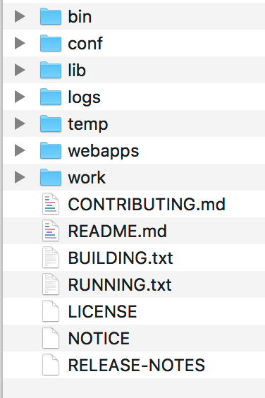

- 00 开篇词 Java程序员如何快速成长？.md.html
- 01 Web容器学习路径.md.html
- 02 HTTP协议必知必会.md.html
- 03 你应该知道的Servlet规范和Servlet容器.md.html
- 04 实战：纯手工打造和运行一个Servlet.md.html
- 05 Tomcat系统架构（上）： 连接器是如何设计的？.md.html
- 06 Tomcat系统架构（下）：聊聊多层容器的设计.md.html
- 07 Tomcat如何实现一键式启停？.md.html
- 08 Tomcat的“高层们”都负责做什么？.md.html
- 09 比较：Jetty架构特点之Connector组件.md.html
- 10 比较：Jetty架构特点之Handler组件.md.html
- 11 总结：从Tomcat和Jetty中提炼组件化设计规范.md.html
- 12 实战：优化并提高Tomcat启动速度.md.html
- 13 热点问题答疑（1）：如何学习源码？.md.html
- 14 NioEndpoint组件：Tomcat如何实现非阻塞I_O？.md.html
- 15 Nio2Endpoint组件：Tomcat如何实现异步I_O？.md.html
- 16 AprEndpoint组件：Tomcat APR提高I_O性能的秘密.md.html
- 17 Executor组件：Tomcat如何扩展Java线程池？.md.html
- 18 新特性：Tomcat如何支持WebSocket？.md.html
- 19 比较：Jetty的线程策略EatWhatYouKill.md.html
- 20 总结：Tomcat和Jetty中的对象池技术.md.html
- 21 总结：Tomcat和Jetty的高性能、高并发之道.md.html
- 22 热点问题答疑（2）：内核如何阻塞与唤醒进程？.md.html
- 23 Host容器：Tomcat如何实现热部署和热加载？.md.html
- 24 Context容器（上）：Tomcat如何打破双亲委托机制？.md.html
- 25 Context容器（中）：Tomcat如何隔离Web应用？.md.html
- 26 Context容器（下）：Tomcat如何实现Servlet规范？.md.html
- 27 新特性：Tomcat如何支持异步Servlet？.md.html
- 28 新特性：Spring Boot如何使用内嵌式的Tomcat和Jetty？.md.html
- 29 比较：Jetty如何实现具有上下文信息的责任链？.md.html
- 30 热点问题答疑（3）：Spring框架中的设计模式.md.html
- 31 Logger组件：Tomcat的日志框架及实战.md.html
- 32 Manager组件：Tomcat的Session管理机制解析.md.html
- 33 Cluster组件：Tomcat的集群通信原理.md.html
- 34 JVM GC原理及调优的基本思路.md.html
- 35 如何监控Tomcat的性能？.md.html
- 36 Tomcat I_O和线程池的并发调优.md.html
- 37 Tomcat内存溢出的原因分析及调优.md.html
- 38 Tomcat拒绝连接原因分析及网络优化.md.html
- 39 Tomcat进程占用CPU过高怎么办？.md.html
- 40 谈谈Jetty性能调优的思路.md.html
- 41 热点问题答疑（4）： Tomcat和Jetty有哪些不同？.md.html
- 特别放送 如何持续保持对学习的兴趣？.md.html
- 结束语 静下心来，品味经典.md.html
- 捐赠
04 实战：纯手工打造和运行一个Servlet
作为Java程序员，我们可能已经习惯了使用IDE和Web框架进行开发，IDE帮我们做了编译、打包的工作，而Spring框架在背后帮我们实现了Servlet接口，并把Servlet注册到了Web容器，这样我们可能很少有机会接触到一些底层本质的东西，比如怎么开发一个Servlet？如何编译Servlet？如何在Web容器中跑起来？
今天我们就抛弃IDE、拒绝框架，自己纯手工编写一个Servlet，并在Tomcat中运行起来。一方面进一步加深对Servlet的理解；另一方面，还可以熟悉一下Tomcat的基本功能使用。
主要的步骤有：
1.下载并安装Tomcat。-
2.编写一个继承HttpServlet的Java类。-
3.将Java类文件编译成Class文件。-
4.建立Web应用的目录结构，并配置web.xml。-
5.部署Web应用。-
6.启动Tomcat。-
7.浏览器访问验证结果。-
8.查看Tomcat日志。
下面你可以跟我一起一步步操作来完成整个过程。Servlet 3.0规范支持用注解的方式来部署Servlet，不需要在web.xml里配置，最后我会演示怎么用注解的方式来部署Servlet。
1. 下载并安装Tomcat
最新版本的Tomcat可以直接在官网上下载，根据你的操作系统下载相应的版本，这里我使用的是Mac系统，下载完成后直接解压，解压后的目录结构如下。

下面简单介绍一下这些目录：
/bin：存放Windows或Linux平台上启动和关闭Tomcat的脚本文件。-
/conf：存放Tomcat的各种全局配置文件，其中最重要的是server.xml。-
/lib：存放Tomcat以及所有Web应用都可以访问的JAR文件。-
/logs：存放Tomcat执行时产生的日志文件。-
/work：存放JSP编译后产生的Class文件。-
/webapps：Tomcat的Web应用目录，默认情况下把Web应用放在这个目录下。
2. 编写一个继承HttpServlet的Java类
我在专栏上一期提到，javax.servlet包提供了实现Servlet接口的GenericServlet抽象类。这是一个比较方便的类，可以通过扩展它来创建Servlet。但是大多数的Servlet都在HTTP环境中处理请求，因此Servlet规范还提供了HttpServlet来扩展GenericServlet并且加入了HTTP特性。我们通过继承HttpServlet类来实现自己的Servlet只需要重写两个方法：doGet和doPost。
因此今天我们创建一个Java类去继承HttpServlet类，并重写doGet和doPost方法。首先新建一个名为MyServlet.java的文件，敲入下面这些代码：
import java.io.IOException;
import java.io.PrintWriter;
import javax.servlet.ServletException;
import javax.servlet.http.HttpServlet;
import javax.servlet.http.HttpServletRequest;
import javax.servlet.http.HttpServletResponse;
public class MyServlet extends HttpServlet {
@Override
protected void doGet(HttpServletRequest request, HttpServletResponse response)
throws ServletException, IOException {
System.out.println("MyServlet 在处理get（）请求...");
PrintWriter out = response.getWriter();
response.setContentType("text/html;charset=utf-8");
out.println("<strong>My Servlet!</strong><br>");
}
@Override
protected void doPost(HttpServletRequest request, HttpServletResponse response)
throws ServletException, IOException {
System.out.println("MyServlet 在处理post（）请求...");
PrintWriter out = response.getWriter();
response.setContentType("text/html;charset=utf-8");
out.println("<strong>My Servlet!</strong><br>");
}
}
这个Servlet完成的功能很简单，分别在doGet和doPost方法体里返回一段简单的HTML。
3. 将Java文件编译成Class文件
下一步我们需要把MyServlet.java文件编译成Class文件。你需要先安装JDK，这里我使用的是JDK 10。接着你需要把Tomcat lib目录下的servlet-api.jar拷贝到当前目录下，这是因为servlet-api.jar中定义了Servlet接口，而我们的Servlet类实现了Servlet接口，因此编译Servlet类需要这个JAR包。接着我们执行编译命令：
javac -cp ./servlet-api.jar MyServlet.java
编译成功后，你会在当前目录下找到一个叫MyServlet.class的文件。
4. 建立Web应用的目录结构
我们在上一期学到，Servlet是放到Web应用部署到Tomcat的，而Web应用具有一定的目录结构，所有我们按照要求建立Web应用文件夹，名字叫MyWebApp，然后在这个目录下建立子文件夹，像下面这样：
MyWebApp/WEB-INF/web.xml
MyWebApp/WEB-INF/classes/MyServlet.class
然后在web.xml中配置Servlet，内容如下：
<?xml version="1.0" encoding="UTF-8"?>
<web-app xmlns="http://xmlns.jcp.org/xml/ns/javaee"
xmlns:xsi="http://www.w3.org/2001/XMLSchema-instance"
xsi:schemaLocation="http://xmlns.jcp.org/xml/ns/javaee
http://xmlns.jcp.org/xml/ns/javaee/web-app_4_0.xsd"
version="4.0"
metadata-complete="true">
<description> Servlet Example. </description>
<display-name> MyServlet Example </display-name>
<request-character-encoding>UTF-8</request-character-encoding>
<servlet>
<servlet-name>myServlet</servlet-name>
<servlet-class>MyServlet</servlet-class>
</servlet>
<servlet-mapping>
<servlet-name>myServlet</servlet-name>
<url-pattern>/myservlet</url-pattern>
</servlet-mapping>
</web-app>
你可以看到在web.xml配置了Servlet的名字和具体的类，以及这个Servlet对应的URL路径。请你注意，servlet和servlet-mapping这两个标签里的servlet-name要保持一致。
5. 部署Web应用
Tomcat应用的部署非常简单，将这个目录MyWebApp拷贝到Tomcat的安装目录下的webapps目录即可。
6. 启动Tomcat
找到Tomcat安装目录下的bin目录，根据操作系统的不同，执行相应的启动脚本。如果是Windows系统，执行startup.bat.；如果是Linux系统，则执行startup.sh。
7. 浏览访问验证结果
在浏览器里访问这个URL：http://localhost:8080/MyWebApp/myservlet，你会看到：
My Servlet!
这里需要注意，访问URL路径中的MyWebApp是Web应用的名字，myservlet是在web.xml里配置的Servlet的路径。
8. 查看Tomcat日志
打开Tomcat的日志目录，也就是Tomcat安装目录下的logs目录。Tomcat的日志信息分为两类 ：一是运行日志，它主要记录运行过程中的一些信息，尤其是一些异常错误日志信息 ；二是访问日志，它记录访问的时间、IP地址、访问的路径等相关信息。
这里简要介绍各个文件的含义。
catalina.***.log
主要是记录Tomcat启动过程的信息，在这个文件可以看到启动的JVM参数以及操作系统等日志信息。
catalina.out
catalina.out是Tomcat的标准输出（stdout）和标准错误（stderr），这是在Tomcat的启动脚本里指定的，如果没有修改的话stdout和stderr会重定向到这里。所以在这个文件里可以看到我们在MyServlet.java程序里打印出来的信息：
MyServlet在处理get请求…
localhost.**.log
主要记录Web应用在初始化过程中遇到的未处理的异常，会被Tomcat捕获而输出这个日志文件。
localhost_access_log.**.txt
存放访问Tomcat的请求日志，包括IP地址以及请求的路径、时间、请求协议以及状态码等信息。
manager.***.log/host-manager.***.log
存放Tomcat自带的Manager项目的日志信息。
用注解的方式部署Servlet
为了演示用注解的方式来部署Servlet，我们首先修改Java代码，给Servlet类加上@WebServlet注解，修改后的代码如下。
import java.io.IOException;
import java.io.PrintWriter;
import javax.servlet.ServletException;
import javax.servlet.annotation.WebServlet;
import javax.servlet.http.HttpServlet;
import javax.servlet.http.HttpServletRequest;
import javax.servlet.http.HttpServletResponse;
@WebServlet("/myAnnotationServlet")
public class AnnotationServlet extends HttpServlet {
@Override
protected void doGet(HttpServletRequest request, HttpServletResponse response)
throws ServletException, IOException {
System.out.println("AnnotationServlet 在处理get请求...");
PrintWriter out = response.getWriter();
response.setContentType("text/html; charset=utf-8");
out.println("<strong>Annotation Servlet!</strong><br>");
}
@Override
protected void doPost(HttpServletRequest request, HttpServletResponse response)
throws ServletException, IOException {
System.out.println("AnnotationServlet 在处理post请求...");
PrintWriter out = response.getWriter();
response.setContentType("text/html; charset=utf-8");
out.println("<strong>Annotation Servlet!</strong><br>");
}
}
这段代码里最关键的就是这个注解，它表明两层意思：第一层意思是AnnotationServlet这个Java类是一个Servlet，第二层意思是这个Servlet对应的URL路径是myAnnotationServlet。
@WebServlet("/myAnnotationServlet")
创建好Java类以后，同样经过编译，并放到MyWebApp的class目录下。这里要注意的是，你需要删除原来的web.xml，因为我们不需要web.xml来配置Servlet了。然后重启Tomcat，接下来我们验证一下这个新的AnnotationServlet有没有部署成功。在浏览器里输入：http://localhost:8080/MyWebApp/myAnnotationServlet，得到结果：
Annotation Servlet!
这说明我们的AnnotationServlet部署成功了。可以通过注解完成web.xml所有的配置功能，包括Servlet初始化参数以及配置Filter和Listener等。
本期精华
通过今天的学习和实践，相信你掌握了如何通过扩展HttpServlet来实现自己的Servlet，知道了如何编译Servlet、如何通过web.xml来部署Servlet，同时还练习了如何启动Tomcat、如何查看Tomcat的各种日志，并且还掌握了如何通过注解的方式来部署Servlet。我相信通过专栏前面文章的学习加上今天的练习实践，一定会加深你对Servlet工作原理的理解。之所以我设置今天的实战练习，是希望你知道IDE和Web框架在背后为我们做了哪些事情，这对于我们排查问题非常重要，因为只有我们明白了IDE和框架在背后做的事情，一旦出现问题的时候，我们才能判断它们做得对不对，否则可能开发环境里的一个小问题就会折腾我们半天。
课后思考
我在Servlet类里同时实现了doGet方法和doPost方法，从浏览器的网址访问默认访问的是doGet方法，今天的课后思考题是如何访问这个doPost方法。
不知道今天的内容你消化得如何？如果还有疑问，请大胆的在留言区提问，也欢迎你把你的课后思考和心得记录下来，与我和其他同学一起讨论。如果你觉得今天有所收获，欢迎你把它分享给你的朋友。
© 2019 - 2023 Liangliang Lee. Powered by gin and hexo-theme-book.